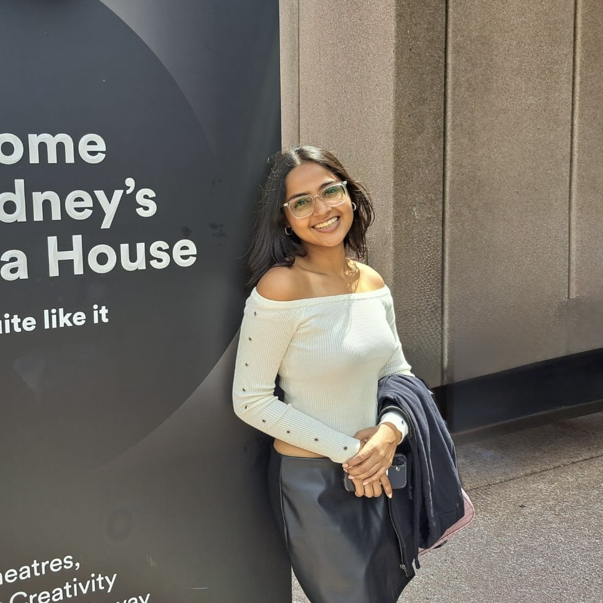

Building models that survive the training run.
Hi! I'm Lavanya. I'm a second-year Mathematics & Computing student at IIT Roorkee, researching diffusion language models with the Vision and Language Group. My current work explores the geometry underneath natural language generation, alongside my interests in Computer Vision.
Reading papers, running experiments, shipping models.
I'm interested in the full ML stack, not just the idea on page one of a paper, but whether it survives contact with a training run. At VLG, I work on non-autoregressive text generation: masked diffusion language models that denoise a whole sequence in parallel instead of committing to one token at a time.
Outside research, I write for Geek Gazette, translating dense technical ideas for a general campus audience. I'm also part of the operations team behind Virasat, IIT Roorkee's heritage arts festival, which has taught me as much about coordination as any lab has about optimization.

Lost in Interpolation: Why Predictive Feedback Fails in Diffusion Language Models
Soft-masking speeds up diffusion language model training by blending the mask embedding with the model's own top-k predictions during fine-tuning, but the standard version does that blending along a straight line, as if the embedding space were flat. It isn't. Token embeddings sit near a thin spherical shell, so a straight-line blend cuts through the inside of that shell and quietly shrinks the embedding's norm at every masked position, feeding the backbone inputs it never saw in pretraining.
We replace the straight line with a great-circle arc: a spherical soft-masking scheme built on the Fréchet mean of the top-k directions and a norm-restoring SLERP step. Fixed at the same confidence weight, the arc-based version tracks clean training behavior while the straight-line version degrades steadily and generates text that scores far closer to human-written text on MAUVE.
SortNow
A YOLOv1-style detector built from scratch - 14×14 grid, 2 boxes per cell, that sorts waste into six categories through a Flask web app, trained on 7,260 images and validated on 3,114.
Spondylolisthesis Classifier
Classifies lumbar spine X-rays into Normal, Anterolisthesis, or Retrolisthesis using geometric features engineered from L1-S1 coordinates, validated against an orthopedist's diagnoses.
Core Member, Vision and Language Group
Researching diffusion language models and non-autoregressive text generation; collaborating on a manuscript currently under review.
Editor, Geek Gazette
Writing and editing technology and science articles for the IIT Roorkee student community, with a focus on making technical ideas accessible.
SPIC MACAY Heritage Club, IIT Roorkee
Organising-team member for Virasat, IIT Roorkee's flagship cultural festival celebrating India's heritage, working across the operations vertical.
Gold Medalist, Delhi Public School R.K. Puram
Awarded for academic excellence in the final year; scored 96.2% in the AISSCE, ranked 12th in school.